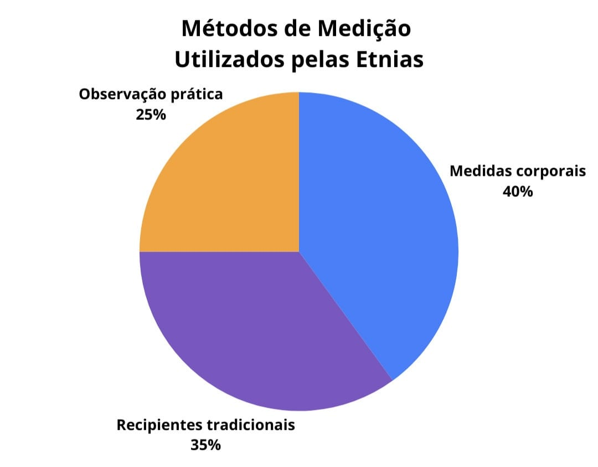

Curiosidades sobre as Etnias
Os povos indígenas Ticuna, Kokama e Kambeba, localizados em Tabatinga-AM, possuem uma rica diversidade de saberes e práticas tradicionais que fazem parte de seu modo de vida.
Nesta página, são apresentadas algumas curiosidades relacionadas ao cotidiano dessas etnias, incluindo aspectos como agricultura, caça, pesca e outras atividades fundamentais para sua subsistência e organização social. Cada uma dessas práticas revela conhecimentos próprios, construídos ao longo do tempo e transmitidos entre gerações.
Comparações e Representações Gráficas Sobre a Agricultura

Este gráfico apresenta os principais métodos de medição utilizados pelas três etnias. Observa-se que todas fazem uso de medidas corporais, como passos e braços, além de recipientes tradicionais e da observação prática. Isso demonstra que, apesar das diferenças culturais, há uma base comum na forma de medir e organizar o espaço agrícola.